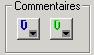
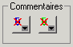
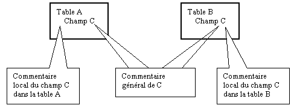

Vous avez la possibilité d’associer des commentaires à chaque objet d’un dictionnaire.
Ces commentaires sont accessibles par les boutons :

S’il n’y a pas de commentaires associé à l’objet, le bouton apparaît avec une croix.

Lorsqu’il y a deux boutons de commentaires, le premier se nomme Commentaire général et le second Commentaire local.
Le commentaire général est associé à l’objet indépendamment de son emplacement dans le dictionnaire. En effet, un champ peut se trouver dans plusieurs tables. Quelque soit la table où ce champ est placé, le commentaire général l’accompagne.
Le commentaire local est associé à l’objet et à sa position dans le dictionnaire. Le commentaire local d’un champ peut être différent suivant que ce champ est placé dans une table ou dans une autre.
Exemple :

Remarque
Les commentaires sont stockés dans un fichier à part. Il porte l’extension .dhdt.